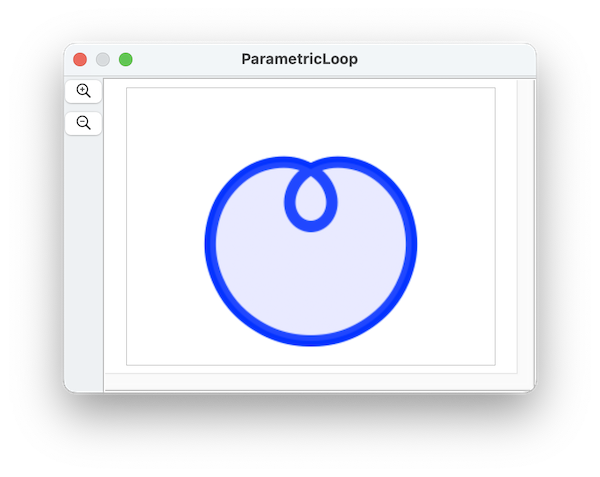

Here's a path that is drawn with a parametric equation:

The script to generate this shape is below. We'll walk through step by step:
This curve is defined by the parametric equation
r(t) = sin(t) * 100
x(t) = cos(3t)) * r
y(t) = sin(3t)) * rover the interval t from 0 to pi
So, first let's define some math helper functions for sine and cosine using some JavaScript callouts:
on math(f, x)
return run script "Math." & f & "(" & x & ")" in "JavaScript"
end math
on sin(x)
math("sin", x)
end sin
on cos(x)
math("cos", x)
end cosThen, implement a handler 'on coord(t)' that defines the parametric equation:
on coord(t)
set rad to (my sin(t)) * 100
set x to (my cos(3 * t)) * rad
set y to (my sin(3 * t)) * rad
return {x, y}
end coordNow, we'll build up 18 anchor points, proceeding in 18 steps from 0 to pi like this:
tell application "SinterPixels"
set anchorData to {}
repeat with a from 0 to 18
set t to a * 3.14158 / 18.0
set nthPos to my coord(t)
set nthm to my coord(t - 0.1)
set nthp to my coord(t + 0.1)
set nthSlope to my slopeFromPoints(nthm, nthp)
set anchorData to anchorData & {{position:nthPos, slope:nthSlope}}
end repeatTo define the tangent at each point, we calculate the slope of the function at that point by calculating the value at t + dt (that's nthp) and t - dt (that's nthm), and define the slope nthSlope using the rise over run formulation dy/dx.
This depends on another helper function that calculates the slope of our function based on the value of the function at small deltas above and below the point:
to slopeFromPoints(p1, p2)
using terms from application "SinterPixels"
set dx to (item 1 of p2) - (item 1 of p1)
set dy to (item 2 of p2) - (item 2 of p1)
return {deltax:dx, deltay:dy}
end using terms from
end slopeFromPointsLastly, the script makes a path from the points:
tell document 1
set thePath to make new path with properties {anchor data:anchorData, position:{0, 0}, closed: true, line width:10, color:blue, fill color:{0.5, 0.5, 1.0, 0.2}}
end tellHere's the full script: ``` on math(f, x) return run script "Math." & f & "(" & x & ")" in "JavaScript" end math
on sin(x) math("sin", x) end sin
on cos(x) math("cos", x) end cos
to slopeFromPoints(p1, p2) using terms from application "SinterPixels" set dx to (item 1 of p2) - (item 1 of p1) set dy to (item 2 of p2) - (item 2 of p1) return {deltax:dx, deltay:dy} end using terms from end slopeFromPoints
on coord(t) set rad to (my sin(t)) * 100 set x to (my cos(3 * t)) * rad set y to (my sin(3 * t)) * rad return {x, y} end coord
tell application "SinterPixels" set anchorData to {}
repeat with a from 0 to 18
set t to a * 3.14158 / 18.0
set nthPos to my coord(t)
set nthm to my coord(t - 0.1)
set nthp to my coord(t + 0.1)
set nthSlope to my slopeFromPoints(nthm, nthp)
set anchorData to anchorData & {{position:nthPos, slope:nthSlope}}
end repeat
tell document 1
set thePath to make new path with properties {anchor data:anchorData, position:{0, 0}, line width:10, color:blue, fill color:{0.5, 0.5, 1.0, 0.2}}
end tellend tell ```